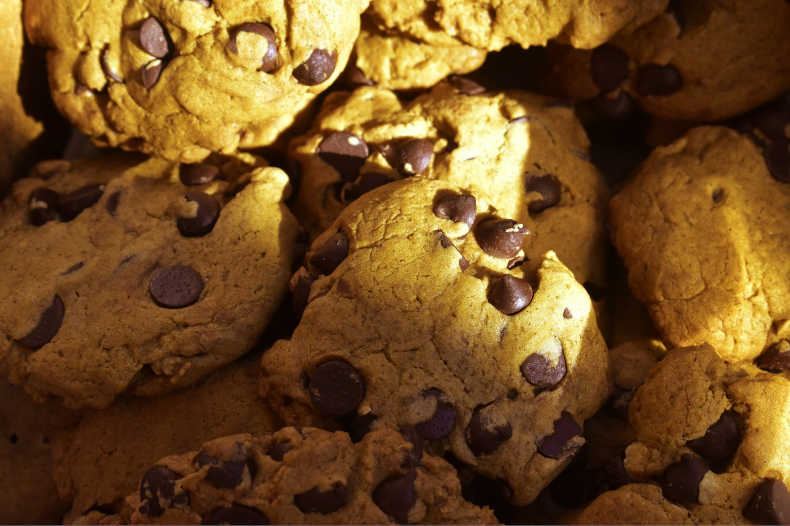

Il nostro metodo
@fornomaddalena
Lievito madre rinfrescato ogni mattina, farine macinate a pietra da un mulino della provincia e burro vero. Seguiamo le stagioni: castagne e zucca in autunno, agrumi in inverno, frutta fresca d'estate. Ogni impasto riposa almeno ventiquattro ore, perché un buon cornetto si sente già dal profumo.